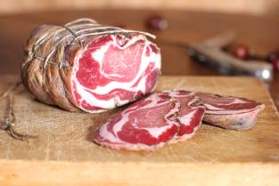
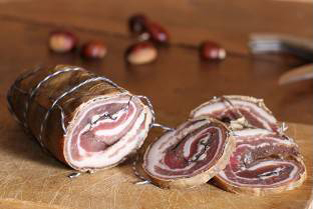
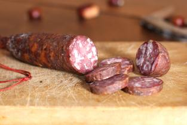

COPPA
La coppa se garde longtemps et se bonifie. Onctueuse, souple, elle met en avant des touches de noisette tout en gardant une complexité aromatique...

PANZETTA
La panzetta, poitrine de porc fumée, est un ingrédient de base de la cuisine corse. A la braise, à la cheminée ou en sauce, elle sait tout faire...

SAUCISSON
Saucisson au sanglier, Salsiccia (saucisse), salamu (rosette) ou saucisse fermière: le saucisson corse est un classique de la gastronomie insulaire...